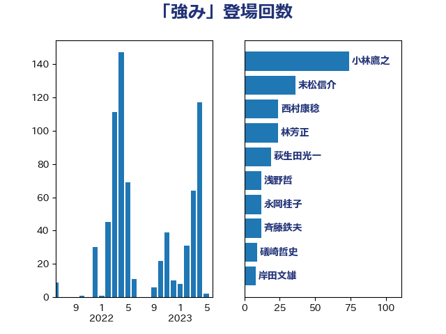

単語「強み」

| 小林鷹之 | 自由民主党 | 74 回 |
| 末松信介 | 自由民主党 | 36 回 |
| 西村康稔 | 自由民主党 | 24 回 |
| 林芳正 | 自由民主党 | 24 回 |
| 萩生田光一 | 自由民主党 | 19 回 |
| 浅野哲 | 国民民主党 | 12 回 |
| 永岡桂子 | 自由民主党 | 12 回 |
| 斉藤鉄夫 | 公明党 | 12 回 |
| 礒崎哲史 | 国民民主党 | 9 回 |
| 岸田文雄 | 自由民主党 | 8 回 |
| 岡田直樹 | 自由民主党 | 8 回 |
| 小沼巧 | 立憲民主党 | 8 回 |
| 大西健介 | 立憲民主党 | 6 回 |
| 高市早苗 | 自由民主党 | 5 回 |
| 鈴木義弘 | 国民民主党 | 5 回 |
| 石川香織 | 立憲民主党 | 5 回 |
| 石川博崇 | 公明党 | 5 回 |
| 松本剛明 | 自由民主党 | 5 回 |
| 長友慎治 | 国民民主党 | 4 回 |
| 笠井亮 | 日本共産党 | 4 回 |
| 田中英之 | 自由民主党 | 4 回 |
| 奥野総一郎 | 立憲民主党 | 4 回 |
| 国光あやの | 自由民主党 | 4 回 |
| 高良鉄美 | 無所属 | 3 回 |
| 鈴木俊一 | 自由民主党 | 3 回 |
| 野田聖子 | 自由民主党 | 3 回 |
| 谷田川元 | 立憲民主党 | 3 回 |
| 石川大我 | 立憲民主党 | 3 回 |
| 石井啓一 | 公明党 | 3 回 |
| 矢倉克夫 | 公明党 | 3 回 |
| 田島麻衣子 | 立憲民主党 | 3 回 |
| 武部新 | 自由民主党 | 3 回 |
| 横沢高徳 | 立憲民主党 | 3 回 |
| 松原仁 | 立憲民主党 | 3 回 |
| 有村治子 | 自由民主党 | 3 回 |
| 岩渕友 | 日本共産党 | 3 回 |
| 尾身朝子 | 自由民主党 | 3 回 |
| 小野泰輔 | 日本維新の会 | 3 回 |
| 小倉將信 | 自由民主党 | 3 回 |
| 務台俊介 | 自由民主党 | 3 回 |
| 住吉寛紀 | 日本維新の会 | 3 回 |
| 中田宏 | 自由民主党 | 3 回 |
| 中川康洋 | 公明党 | 3 回 |
| 高橋光男 | 公明党 | 2 回 |
| 青柳仁士 | 日本維新の会 | 2 回 |
| 関芳弘 | 自由民主党 | 2 回 |
| 赤木正幸 | 日本維新の会 | 2 回 |
| 西村明宏 | 自由民主党 | 2 回 |
| 若松謙維 | 公明党 | 2 回 |
| 若宮健嗣 | 自由民主党 | 2 回 |
| 羽田次郎 | 立憲民主党 | 2 回 |
| 空本誠喜 | 日本維新の会 | 2 回 |
| 石井苗子 | 日本維新の会 | 2 回 |
| 牧山ひろえ | 立憲民主党 | 2 回 |
| 渡辺周 | 立憲民主党 | 2 回 |
| 渡辺創 | 立憲民主党 | 2 回 |
| 森屋隆 | 立憲民主党 | 2 回 |
| 柳本顕 | 自由民主党 | 2 回 |
| 松野博一 | 自由民主党 | 2 回 |
| 村田享子 | 立憲民主党 | 2 回 |
| 杉尾秀哉 | 立憲民主党 | 2 回 |
| 斎藤アレックス | 国民民主党 | 2 回 |
| 平林晃 | 公明党 | 2 回 |
| 平木大作 | 公明党 | 2 回 |
| 平山佐知子 | 無所属 | 2 回 |
| 岬麻紀 | 日本維新の会 | 2 回 |
| 山口晋 | 自由民主党 | 2 回 |
| 尾崎正直 | 自由民主党 | 2 回 |
| 大岡敏孝 | 自由民主党 | 2 回 |
| 大家敏志 | 自由民主党 | 2 回 |
| 塩村あやか | 立憲民主党 | 2 回 |
| 堂故茂 | 自由民主党 | 2 回 |
| 加藤勝信 | 自由民主党 | 2 回 |
| 中川郁子 | 自由民主党 | 2 回 |
| 上野通子 | 自由民主党 | 2 回 |
| ながえ孝子 | 無所属 | 2 回 |
| こやり隆史 | 自由民主党 | 2 回 |
| 高階恵美子 | 自由民主党 | 1 回 |
| 高橋はるみ | 自由民主党 | 1 回 |
| 高木啓 | 自由民主党 | 1 回 |
| 高木かおり | 日本維新の会 | 1 回 |
| 音喜多駿 | 日本維新の会 | 1 回 |
| 長谷川英晴 | 自由民主党 | 1 回 |
| 鈴木馨祐 | 自由民主党 | 1 回 |
| 鈴木貴子 | 自由民主党 | 1 回 |
| 鈴木敦 | 国民民主党 | 1 回 |
| 金子道仁 | 日本維新の会 | 1 回 |
| 野上浩太郎 | 自由民主党 | 1 回 |
| 酒井庸行 | 自由民主党 | 1 回 |
| 足立敏之 | 自由民主党 | 1 回 |
| 角田秀穂 | 公明党 | 1 回 |
| 藤木眞也 | 自由民主党 | 1 回 |
| 藤井一博 | 自由民主党 | 1 回 |
| 茂木敏充 | 自由民主党 | 1 回 |
| 舩後靖彦 | れいわ新選組 | 1 回 |
| 舟山康江 | 国民民主党 | 1 回 |
| 羽生田俊 | 自由民主党 | 1 回 |
| 緑川貴士 | 立憲民主党 | 1 回 |
| 秋野公造 | 公明党 | 1 回 |
| 福重隆浩 | 公明党 | 1 回 |
| 神田潤一 | 自由民主党 | 1 回 |
| 石井正弘 | 自由民主党 | 1 回 |
| 白石洋一 | 立憲民主党 | 1 回 |
| 田村智子 | 日本共産党 | 1 回 |
| 田村まみ | 国民民主党 | 1 回 |
| 牧島かれん | 自由民主党 | 1 回 |
| 漆間譲司 | 日本維新の会 | 1 回 |
| 滝沢求 | 自由民主党 | 1 回 |
| 浮島智子 | 公明党 | 1 回 |
| 浜野喜史 | 国民民主党 | 1 回 |
| 浜口誠 | 国民民主党 | 1 回 |
| 浅田均 | 日本維新の会 | 1 回 |
| 津島淳 | 自由民主党 | 1 回 |
| 河野義博 | 公明党 | 1 回 |
| 武井俊輔 | 自由民主党 | 1 回 |
| 榛葉賀津也 | 国民民主党 | 1 回 |
| 柴田巧 | 日本維新の会 | 1 回 |
| 松沢成文 | 日本維新の会 | 1 回 |
| 松山政司 | 自由民主党 | 1 回 |
| 本田太郎 | 自由民主党 | 1 回 |
| 朝日健太郎 | 自由民主党 | 1 回 |
| 後藤茂之 | 自由民主党 | 1 回 |
| 庄子賢一 | 公明党 | 1 回 |
| 平将明 | 自由民主党 | 1 回 |
| 川田龍平 | 立憲民主党 | 1 回 |
| 岩田和親 | 自由民主党 | 1 回 |
| 岡本あき子 | 立憲民主党 | 1 回 |
| 山田賢司 | 自由民主党 | 1 回 |
| 山口壯 | 自由民主党 | 1 回 |
| 小渕優子 | 自由民主党 | 1 回 |
| 小林茂樹 | 自由民主党 | 1 回 |
| 宮本周司 | 自由民主党 | 1 回 |
| 宮下一郎 | 自由民主党 | 1 回 |
| 宗清皇一 | 自由民主党 | 1 回 |
| 守島正 | 日本維新の会 | 1 回 |
| 大野泰正 | 自由民主党 | 1 回 |
| 大野敬太郎 | 自由民主党 | 1 回 |
| 大島敦 | 立憲民主党 | 1 回 |
| 大口善徳 | 公明党 | 1 回 |
| 堀井巌 | 自由民主党 | 1 回 |
| 坂本祐之輔 | 立憲民主党 | 1 回 |
| 国定勇人 | 自由民主党 | 1 回 |
| 和田有一朗 | 日本維新の会 | 1 回 |
| 吉良州司 | 無所属 | 1 回 |
| 吉田豊史 | 無所属 | 1 回 |
| 前原誠司 | 国民民主党 | 1 回 |
| 佐藤正久 | 自由民主党 | 1 回 |
| 伊藤岳 | 日本共産党 | 1 回 |
| 伊佐進一 | 公明党 | 1 回 |
| 今枝宗一郎 | 自由民主党 | 1 回 |
| 今井絵理子 | 自由民主党 | 1 回 |
| 井原巧 | 自由民主党 | 1 回 |
| 井上貴博 | 自由民主党 | 1 回 |
| 中野洋昌 | 公明党 | 1 回 |
| 中根一幸 | 自由民主党 | 1 回 |
| 中島克仁 | 立憲民主党 | 1 回 |
| 下野六太 | 公明党 | 1 回 |
| 三谷英弘 | 自由民主党 | 1 回 |